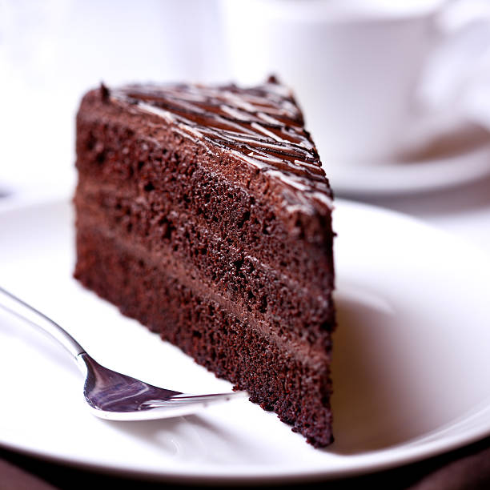

Chocolate Cake

Description
You've officially run out of reasons to say you can't bake a cake.
Ingredients
- 2 cups white sugar
- 1 ¾ cup all-purpose flour
- ¾ cup unsweetened cocoa powder
- 1 ½ teaspoons baking powder
- 1 ½ teaspoons baking soda
- 1 teaspoon salt
- 2 eggs
- 1 cup milk
- ½ cup vegetable oil
- 2 teaspoons vanilla extract
- 1 cup boiling water
Steps
- Preheat the oven to 350 degrees F (175 degrees C).
- Grease and flour two nine-inch round pans. OR line a half sheet pan with parchment paper and spray with cooking spray if you want to bake a sheet cake.
- In a large bowl, stir together the sugar, flour, cocoa, baking powder, baking soda, and salt.
- Add the eggs, milk, oil, and vanilla.
- Mix for 2 minutes on medium speed of mixer. Stir in the boiling water last.
- The batter will be thin. Pour evenly into the prepared pans.
- Bake 30 to 35 minutes in the preheated oven until you can insert a toothpick into the cake, and remove it dry. OR if you're baking a sheet cake, bake for only 15 minutes.
- Cool in the pan(s) for 10 minutes, then remove to a wire rack to cool completely.
Back to home